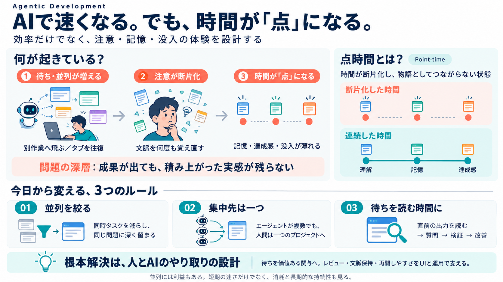

Agentic Software Engineering: Foundational Pillars and a Research Roadmap
To fully unlock the agentic SE (SE 3.0), we must simultaneously support the SE activities of agents (i.e., SE for Agents…

注意と時間は“作業”で壊れる
AIにタスクを任せて進めるほど、待ち時間と並列が増え、注意・記憶・没入感が断片化しうる。
本デッキは、効率の話を一段下げて「体験（現象）」として整理する。
速いのに没入できない
エージェント型開発では、AIが実行している間にタブや指示が増え、人間の注意があちこちへ逸れやすい。
速いほど“読む・確認する”より“次へ移る”衝動が勝ちやすい。
生産性より“体験”
問題は「成果が出ない」だけでなく、時間が連続した物語として編まれず、何を達成したか記憶しづらくなること。
効率低下は“表層”、時間感覚の崩れが“深層”になり得る。
点に切れる時間
ビョン＝チョル・ハンの「point-time」は、時間が原子化され物語的連続性がない状態を指す。
だから“技能の喪失”だけでなく、“時間を生きる感覚”が薄れる。
注意はタブで削れる
Andy Matuschakの話として、注意が断片化するとタブ行き来が増え、ワーキングメモリを作り直す必要が出る。
速さはあるのに、“理解が深まる感覚”が続かない。
記憶と目標が壊れる
Nioというデザイナーの証言では、「計画や記憶がない永遠の現在」や、成果・記憶の欠如が語られる。
体験としてのコストが、時間の断片化と結びつく。
点時間を避ける
対抗策は明確で、「点時間」を避けるには断片化（マルチタスク）を拒むこと。
“万能薬”ではないが、まず切りやすいレバーはここにある。
待ち時間の使い方
エージェント実行中に本当は人間が待つだけになりがちだが、その間も注意を同一対象へ固定できる。
これは応急処置で、根は“相互作用の設計”にある。
根本はUI/運用設計
根本的には、エージェントと人間の“やり取り”を設計する必要がある。
トークンを売る側の改善には期待しづらく、別主体が工夫すべきという問題提起。
並列は“長期コスト”
マネジメント視点では、並列を全面否定するのは危険だが、長期的に生産が増える根拠も強くない。
体験の不調を、組織の持続性の問題として扱う。
今日からの設計
点時間（時間の断片化）を避けるには、まず“並列と待ち”の扱いを変える。
根本は相互作用の設計だが、まずは運用で被害を小さくする。
参照
本文で言及された概念・人物・補助的な論点（Web/履歴由来の接続）を、読みの手がかりとして列挙する。
※本デッキはユーザー提示文の要約に基づく。厳密な書誌情報の追記は原文参照が必要。
To fully unlock the agentic SE (SE 3.0), we must simultaneously support the SE activities of agents (i.e., SE for Agents…
| 2026-07-10 | 98 | | 2026-07-11 | 49 | | 2026-07-12 | 69 | | 2026-07-13 | 20 | | 2026-07-14 | 30 | | 2026-07-15 | 50 | …
Abstract Over-reliance on AI systems can undermine users’ critical think-ing and promote complacency, a risk intensified…
One promising research direction is the development of mixed-initiative workflows, in which control shifts fluidly betwe…
## LEGAL NOTICES Copyright 2026 Test Double, Inc. Distributed under the MIT license. ## About Han: AI skills and agen…